MainStreet. AI-curated local discovery, designed with AI workflows.
A product design project exploring how AI can turn the scattered ritual of finding a good local spot — Google Maps for ratings, Instagram for vibe, TikTok for food, friends for a sanity check — into a single, predictive, journey-based discovery feed for busy people in Swiss cities.


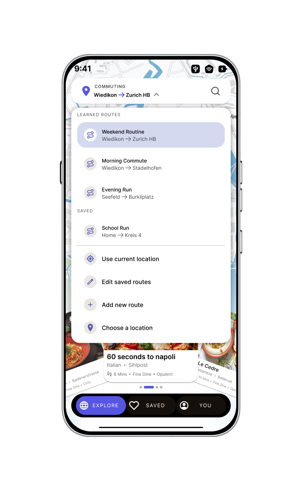

01Design Foundations
Before starting any design, I focus on four things that keep the work honest and directional:
02Problem Statement
Finding the right local business is currently a mess — or doesn't happen at all. People bounce between Google Maps for ratings, Instagram to check the vibe, TikTok to see if the food looks good, and friends for recommendations — and still end up at places that don't match what they actually want. On the other side, local business owners struggle to reach their ideal customers and rarely connect with the audience they were built for.
03Target Audience
04Surface
Mobile apps (iOS & Android) are in scope. Web is explicitly out of scope — the core value depends on live location, passive route learning and glanceable, thumb-first interactions that only make sense on a phone in the user's hand.
05Success Metrics
06AI Tools · Prototyping
Where AI accelerated the visual head start, and where it fell short.
To kick off the visual process, I used AI generation tools to get a rapid head start. They provided a great baseline and surfaced ideas much faster than manual competitive analysis. But they couldn't be used as-is — each had core UX gaps that shaped the direction of the real design.
Lovable
WHAT WORKED
- Decent carousel showing matching scores alongside the map
GAPS
- Splits ‘Home' and ‘Map' into two tabs — introduces unnecessary friction
- Routing logic is flawed; unclear how the UI handles a plain ‘current location' state with no route
- Bright red on the map reads as traffic / warning — wrong signal for a premium, curated vibe
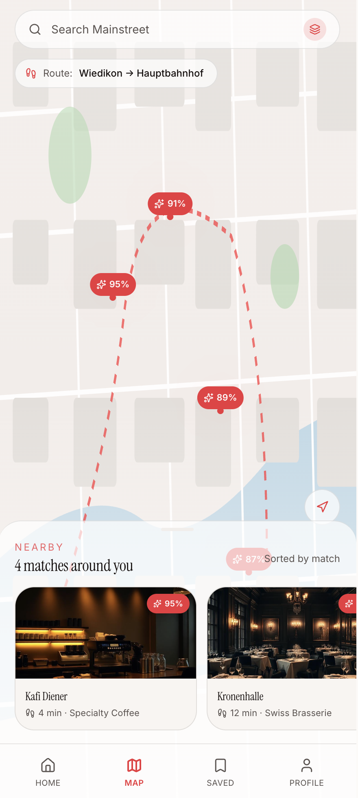
Figma Make
WHAT WORKED
- Fast baseline styling
- Surfaces card and grid ideas quickly
GAPS
- No dedicated list view to actually browse personalized suggestions
- Context is broken — no clear signal of where the search is happening
- No way to add a route or differentiate it from a standard neighborhood search
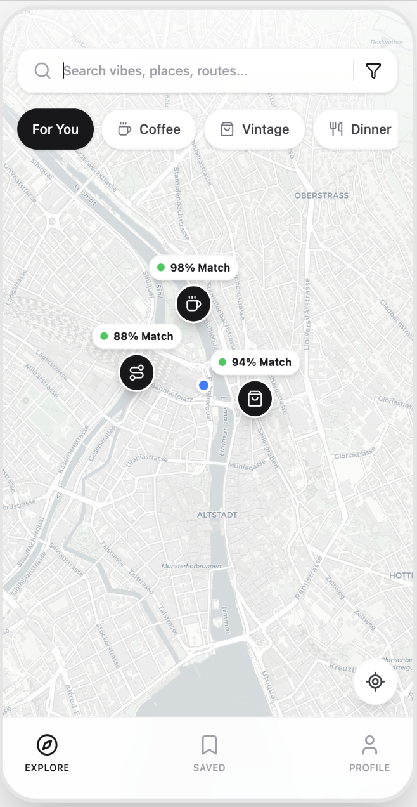
Google Stitch
WHAT WORKED
- Strong onboarding baseline — pictorial choices, one question per page
- Confirms the low-cognitive-load direction I was already thinking about
GAPS
- ‘location_on' header is vague and unhelpful
- No system for manually applying routes or surfacing learned ones
- Separates ‘Matches for You' from the Map — the exact split I chose to solve
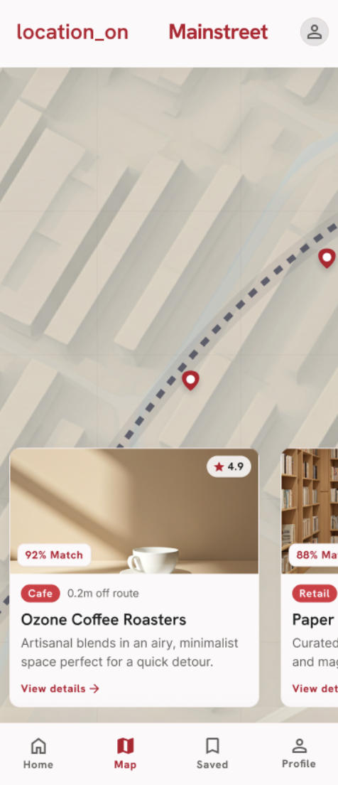
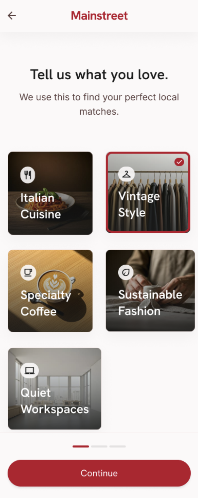
07Wireframing
Back to paper, to solve the structural flaws.
After identifying the structural flaws in the AI explorations, I stepped back and moved to paper. Onboarding was designed around a single question per screen with heavy use of visual graphics to drastically reduce cognitive load.
I also prioritised a dedicated ‘pre-permission' location screen. Because the app's value depends on tracking daily routes, it's critical to set the right tone and clearly explain the value exchange before triggering the OS-level permission prompt.
For the home screen, the challenge was seamlessly combining four complex elements: map interactions, routing logic, current location, and a personalised list of places with matching scores. I mapped out how users would intuitively add routes or apply quick filters like ‘Coffee' or ‘Dinner' without losing context.
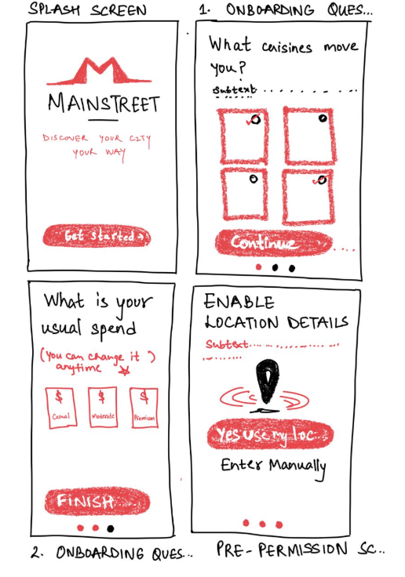
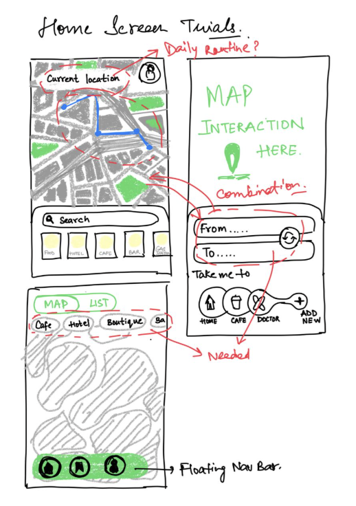
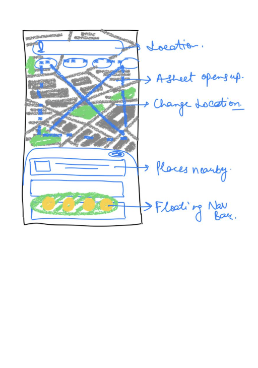
08Mocks for Onboarding
One question per screen, for both user and business flows.
The onboarding screens are designed to hold one question per page — decreasing cognitive load and minimising time spent on any single screen. Separate onboarding flows exist for the business owner and the everyday user.
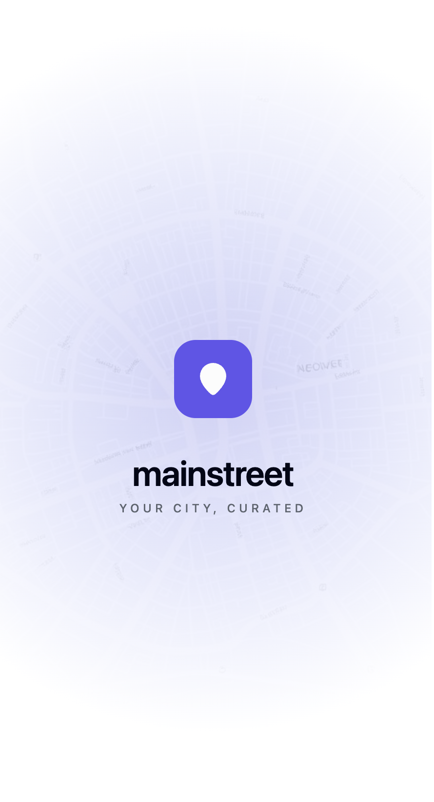
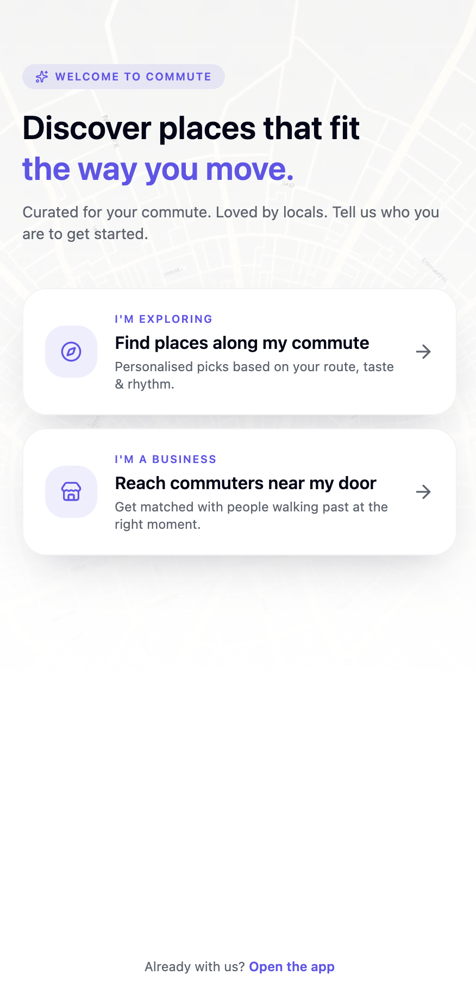
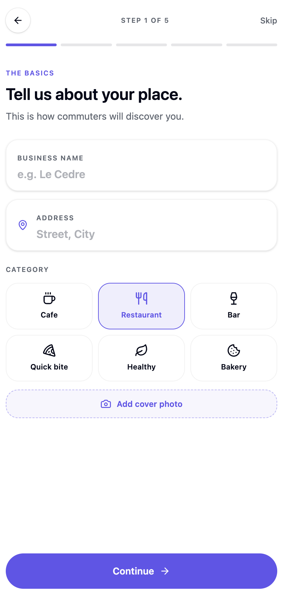
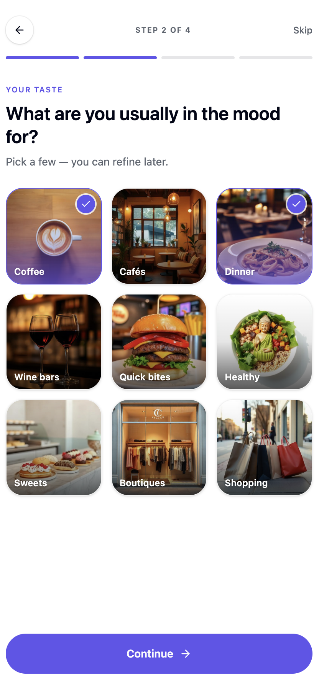
09Hi-fi Mocks
The active ‘Exploring' state — before routing is applied.
From the wireframes, I developed a set of high-fidelity screens that walk through the core loop — from a plain ‘Exploring' state, to passive route detection, to the unified spatial controls that hold it all together.
Discovery — current location
The default ‘Exploring' state stays fundamentally map-centric to preserve context, paired with low-friction quick-filter pills — ‘Open Now', ‘Coffee', ‘Dinner' — so users can rapidly narrow criteria without ever opening a separate search menu. The wheel carousel maximises each venue's visual aesthetic: walk time, a Smart Matching Score, and vibe tags like ‘opulent' or ‘cozy' answer is this my vibe? at a single glance.
Pattern detected — new route
MainStreet's true differentiator: predictive, journey-based curation. The system passively recognises a repeated route — Wiedikon → Zurich HB — and surfaces a subtle ‘Pattern Detected' banner, curating the sheet to matches along that path. It proves the intelligence without ever asking the user to configure it.
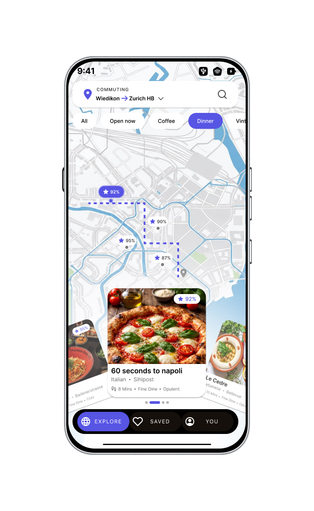
No banner — learned commute
Once acknowledged, the banner is dismissed and stays hidden for subsequent trips on the same route. Utility apps lose trust the moment they become noisy — showing the pattern once, then quietly curating in the background, is the detail that earns the second visit.
Unified location dropdown
The most important structural decision: all spatial controls live inside a single top-left menu — switching to a learned ‘Morning Commute', editing a saved route, or jumping to a new neighborhood. The top-left universally controls where the app is looking, so the bottom sheet is free to focus purely on what is there.
10Alternative — Bottom Sheet List
Optimised for rapid scanning, closer to established habits.
I also built an alternative mock using a standard bottom-sheet list. The wheel is optimised for a ‘focused decision' model — one premium recommendation at a time.
This alternative is designed for users who prioritise rapid scanning: it lets them cross-compare 4–5 highly-rated places simultaneously and leans on established mental models from apps like Google Maps.
11Design Decisions — the Whys
Each decision maps back to trust, focus or premium feel.